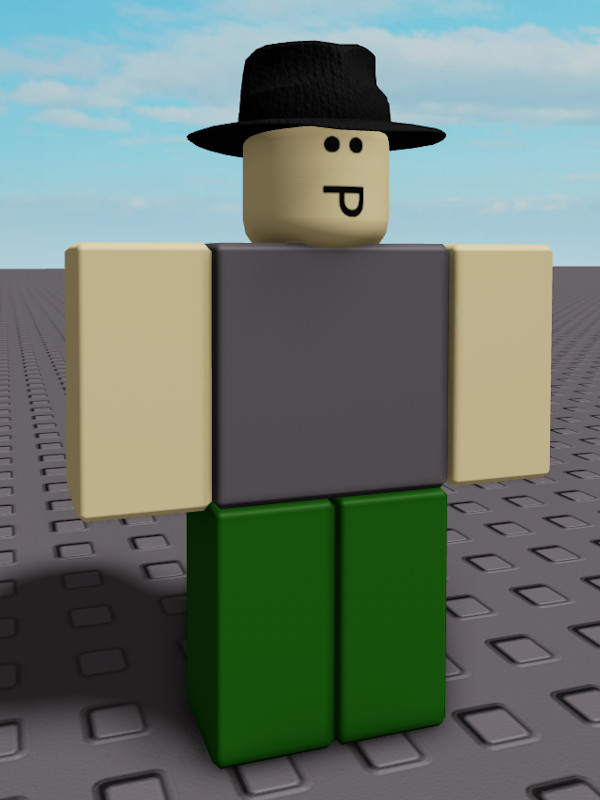

Ryan

Note
The documented character does not exist in-game. It is either unseen, fanmade or is unofficial.
The documented character does not exist in-game. It is either unseen, fanmade or is unofficial.
Ryan is a fanmade character from Test Place: Classics. He wears a black fedora, a grey shirt and green trousers.
Trivia
• Even though Ryan never made an appearance in T.P.C.L, he might be added to the game in the future.
• Ryan is supposed to appear in the spawn area and circle around the entire map, stopping for potential bypassers that want to talk to him.
• He has a friendly personality. He also likes touring players around the map.
• Ryan likes to hang out with Lawrence. They are best friends.
• Ryan is supposed to appear in the spawn area and circle around the entire map, stopping for potential bypassers that want to talk to him.
• He has a friendly personality. He also likes touring players around the map.
• Ryan likes to hang out with Lawrence. They are best friends.